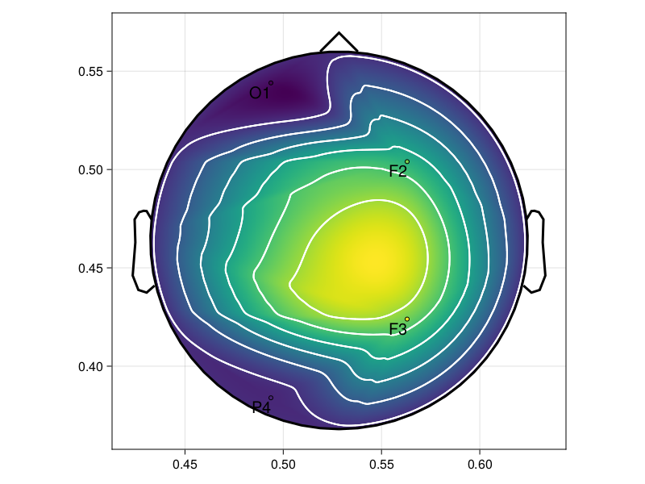

Hide Axis Spines and Decorations
In this section we discuss how users are able to efficiently hide axis spines and decorations in their plots.
While it's possible to hide these axis decorations through setting the axis settings with axis=(;...), Makie.Axis features multiple variables for different aspects of the plot. This means that removing all decoration is only possible by setting a lot of variables each time.
Makie does feature methods like hidespines! and hidedecorations!, but the user might not have easy acces to the axis their plot is drawn in.
So instead these functions can be called by setting variables with layout = (;):
... layout = (
...
hidespines = (),
hidedecorations = ()
)Since these values mirror the input of the function, we can use an empty tuple to remove all decorations or spines respectively
And using hidespines = (:r, :t) results in the removal of the top and right border.
For more information on the input of these functions refer to the Makie dokumentation on Axis.
Since some plots hide features by default, the hiding can be reverted by setting the variables to nothing
plot_xxx(...;layout=(;
hidespines = nothing,
hidedecorations = nothing
)